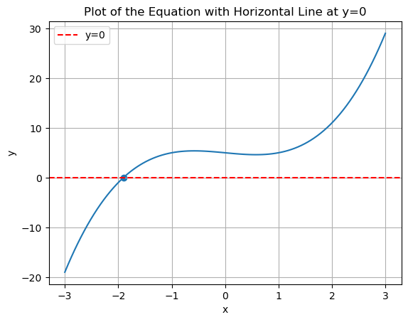
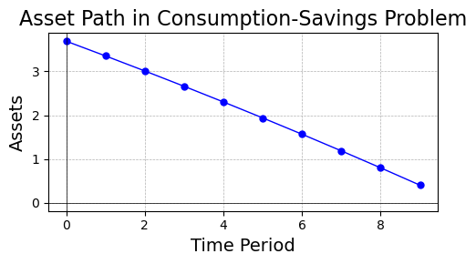
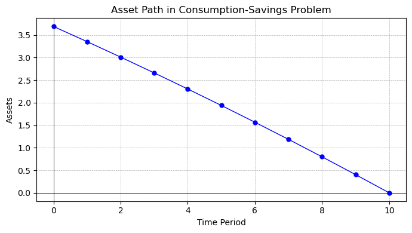
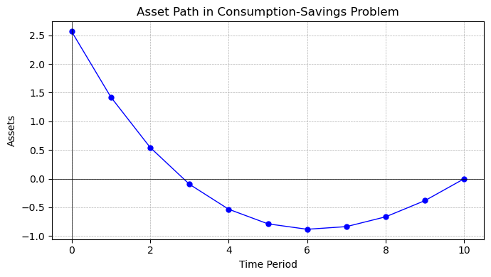
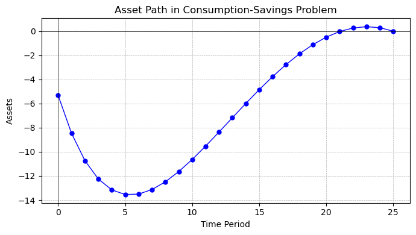
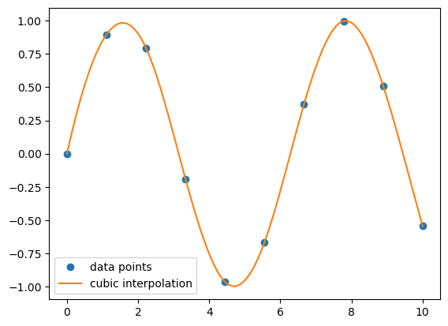

Introduction to Equation Solving & Optimization in Python#
Python provides powerful tools and libraries for solving various types of equations, ranging from simple systems of linear equations to more complex polynomial and non-linear equations. This introduction will guide you through the basics of solving these equations using Python.
1. Solving Systems of Linear Equations#
A system of linear equations can be represented in matrix form as Ax = b, where:
- A is a matrix of coefficients,
- x is a vector of unknowns,
- b is a vector of constants.
In Python, you can solve such systems using the numpy library:
import numpy as np
import matplotlib.pyplot as plt
# Coefficient matrix A
A = np.array([[3, 1], [1, 2]])
# Constant vector b
b = np.array([9, 8])
# Solving for x
x = np.linalg.solve(A, b)
print(x)
[2. 3.]
Exercises:
- Write a function
fittaking in a np.arrayyand a matrixXof conformable dimensions (X\in \mathbb{R}^{n\times k}), such that it calculates the OLS estimator \hat{\beta}(X), as well as the residual vector \epsilon. Do not solve the normal equations with a matrix inverse, but usenp.linalg.solve. - Write a function
robustwhich calculates the sandwich estimator:
- Write a
classcalledolsmodelwhich holdsyandX, and which contains methodsfit,robustandpredict
Solution
def sim_some_data(size, ncov):
X = np.random.normal(size=(size, ncov))
beta = np.random.randint(-5,5, size = ncov)
X[:, 0] = 1
y = X @ beta + np.random.normal(loc=0, scale=ncov, size=size)
return y, X, beta
y, X, beta = sim_some_data(100_000, 100)
def fit(y, X):
beta_hat = np.linalg.solve( X.T @ X, X.T @ y )
resid = y - X @ beta_hat
return beta_hat, resid
beta_hat, resid = fit(y, X)
from numba import njit
@njit
def robust(X, resid):
k = X.shape[1]
n = X.shape[0]
sum = np.zeros((k, k))
for i in range(n): # we prefer using a loop over using residuals on a diagonal matrix, so we don't have to instantiate a NxN matrix
sum = sum + np.outer(X[i, :], X[i, :]) * (resid[i]**2)
XpX_inv = np.linalg.inv(X.T @ X)
sw = (XpX_inv @ sum @ XpX_inv)
return sw
_ = robust(X, resid)
## Or an alternative version using no matrix inversion:
@njit
def robust_linalg(X, resid):
k = X.shape[1]
n = X.shape[0]
sum = np.zeros((k, k))
for i in range(n): # we prefer using a loop over using residuals on a diagonal matrix, so we don't have to instantiate a NxN matrix
sum = sum + np.outer(X[i, :], X[i, :]) * (resid[i]**2)
XpX = X.T @ X
# steps:
# XpX @ sw @ XpX = sum
sw_XpX = np.linalg.solve(XpX , sum)
# steps:
# sw @ XpX = sw_XpX
# XpX.T @ sw.T = sw_XpX.T
sw_T = np.linalg.solve(XpX.T, sw_XpX.T) # transpose of sandwich sw (but sw is diagonal)
return sw_T
_ = robust_linalg(X, resid) # compile function and throw result away
%timeit robust(X, resid)
%timeit robust_linalg(X, resid)
1.3 s ± 88.9 ms per loop (mean ± std. dev. of 7 runs, 1 loop each)
1.21 s ± 45.2 ms per loop (mean ± std. dev. of 7 runs, 1 loop each)
2. Finding Roots of Polynomial Equations#
For polynomial equations, Python’s numpy library offers straightforward methods to find roots. For example, to solve a polynomial equation like ax^2 + bx + c = 0.
This code computes the roots of the quadratic equation x^2 - 3x + 2 = 0, which are the values of x that satisfy the equation.
coefficients = [1, -3, 2] # Coefficients of x^2 - 3x + 2
roots = np.roots(coefficients)
print(roots)
[2. 1.]
Exercise: Write a function IRR to calculate the internal rate of return of a payment stream. The function takes as arguments a stream of future payments x_1,...,x_n and an initial payment C_0, and finds the roots of the equation $$ C_0 = \sum_i x_i (1+r)^{-i}.$$
It then checks which of the roots \{r_1,...,r_n\} are real, and picks among those the internal rate of return. Does the function work well for large n?
C_0 = 100 # Initial investment
x = np.array([20, 26, 40, 55]) # Cash flows, the last payment comes last in this sequence
def IRR(C_0, x):
# Reverse the cash flows array to match the polynomial root finding convention
x = np.flip(x)
# Create the coefficients array for the polynomial equation
coefficients = np.concatenate([x, [-C_0]])
# Find the roots of the polynomial equation
roots = np.roots(coefficients)
# Filter out the complex roots, keep only real roots
is_real_solution = np.real(roots) == roots
roots = roots[is_real_solution]
roots = np.real(roots)
# Calculate IRR candidates from the real roots
IRR_candidates = roots**(-1) - 1
# Filter out IRR candidates that are greater than -1
IRR = IRR_candidates[IRR_candidates > -1]
# Return the IRR if there is a unique solution, otherwise print a message
if IRR.size == 1:
return IRR[0]
else:
print("non-unique IRR")
# Call the IRR function with the initial investment and cash flows
IRR(C_0, x)
0.1280272166910017
3. Newton Methods for General Non-Linear Equations#
We now try to understand Newton’s workhorse optimization routine.
Newton’s Method#
1. Basic Idea#
Newton’s method iteratively approximates the root of a function using the following update rule:
where:
- x_n is the current estimate of the root.
- f'(x_n) is the derivative (or Jacobian, in the multivariate case) of f(x) at x_n.
2. Algorithm#
- Start with an initial guess x_0.
- Compute the function value f(x_n) and its derivative f'(x_n).
- Update the estimate using the formula x_{n+1} = x_n - \frac{f(x_n)}{f'(x_n)}.
- Repeat until the change in x is smaller than a specified tolerance, or the function value f(x_n) is sufficiently close to zero.
Exercise: With pen and paper, prove that Newton’s method converges in one step for any linear equation Ax = b
from scipy.optimize import fsolve
# varaible intercept for equation below
interc = 5
def equation(x, interc):
return x**3 - x + interc
print("roots found by numpy:", np.roots([1, 0, -1, + interc]))
initial_guess = -2
x_root, fsolve_dict, code, info = fsolve(equation, initial_guess, args=(interc), full_output=True)
print(fsolve_dict)
plt.plot(np.linspace(-3, 3, 100),equation(np.linspace(-3, 3, 100), interc))
plt.axhline(0, color='red', linestyle='--', label='y=0') # Add horizontal line at y=0
plt.scatter(x_root, equation(x_root, interc))
plt.xlabel('x')
plt.ylabel('y')
plt.title('Plot of the Equation with Horizontal Line at y=0')
plt.legend()
plt.grid(True)
plt.show()
print("Note that the fsolve routine gets stuck for initial values in the region (-1, 1).")
roots found by numpy: [-1.90416086+0.j 0.95208043+1.31124804j 0.95208043-1.31124804j]
{'nfev': 7, 'fjac': array([[-1.]]), 'r': array([-9.87749]), 'qtf': array([1.12003029e-09]), 'fvec': array([0.])}

Note that the fsolve routine gets stuck for initial values in the region (-1, 1).
Let’s write a multivariate Newton solver able to solve equations of type F(x)=0, \; F: \mathbb{R}^n \rightarrow \mathbb{R}^n. The solver should take as inputs a funtion to solve, f, a vector x0 as a starting point, and a tolerance level tol for convergence, as well as a maxiter number of iterations after which it stops the solution process.
We proceed in a few steps, in particular, first we need a method to obtain the jacobian, Jf at an arbitrary point:
# example function I
def f(x):
return np.array([
x[0]**2 - 2 + 4*x[1],
- x[1] + x[0]**5
])
x0 = np.array([1., 1.])
# # example function II
# def f(x):
# return np.array([
# x[0]**2,
# x[1]**5
# ])
# x0 = np.array([1., 1.])
# # example function III
# def f(x):
# return np.array([
# x[0]**2
# ])
# x0 = np.array([1.])
f(x0)
array([3., 0.])
# run-off-the-mill method to calculate a jacobian numerically
def jacobian(f, x0):
x0 = np.array(x0, dtype='float64')
fx0 = f(x0)
M, N = *fx0.shape, *x0.shape
Jf = np.empty((M, N))
epsilon = 1E-8
for i in range(N):
x_eps = x0.copy()
x_eps[i] += epsilon
Jf[i, :] = (f(x_eps) - fx0) / epsilon
return Jf
# test the function
jacobian(f, x0)
array([[ 1.99999999, 5.00000008],
[ 3.99999998, -0.99999999]])
# newton solver
def newton(f, x0, tol = 1E-12, maxiter=1_000):
x_old = x0
x_new = x_old.copy()
Jf = jacobian(f, x_old)
for i in range(maxiter):
x_old = x_new.copy()
f_old = f(x_new)
if np.all( np.abs(f_old) < tol ) :
print(f"convergence achieved after {i} iterations")
return x_new, f_old, Jf
Jf = jacobian(f, x_old)
#print(f_old)
x_new = x_old - np.linalg.inv(Jf) @ f_old
print("convergence not achieved")
return x_old, f_old, Jf
# it works!
newton(f, x0, maxiter=10_000)
convergence achieved after 124 iterations
(array([0.804978 , 0.33800261]),
array([-8.11350986e-13, 1.27675648e-13]),
array([[ 1.60995601, 2.09945251],
[ 4. , -1. ]]))
Exercise: Secant Method
The Secant method is a derivative-free variation of Newton’s method. Instead of using the exact derivative f'(x), it approximates the derivative using two recent points:
- Advantages: Does not require computing derivatives, which can be advantageous when the derivative is difficult to calculate.
- Disadvantages: Typically converges more slowly than Newton’s method.
Write a univariate root solver secant_newton in the spirit of the newton solver we just developed, which uses the secant method.
4. Application: Optimal Life-Time Consumption#
Let’s use the solver we just wrote to solve a class of simple optimal consumption problems. In T periods, an agent can decide to save or consume, given an initial endowment \omega and some income y_t, which varies every period.
Giving us FOCs: $$ \begin{equation} f_0(\omega, a_0, a_1) = 0, \end{equation} $$
to solve simultaneously by choosing a_0, ..., a_{T-1}. We could do this in a recursive way, but lets attack the FOCs directly.
beta = 0.98
r = 1/beta - 1
omega = 5
# y has T elements
y = np.full(10, 1)
# a_choice has T elements
a_choice = np.full(10, 0)
def F(beta, r, omega, y, a_choice):
a = np.zeros((1+len(y))) # accommodate initial and terminal condition
a[0:-1] = a_choice
F = np.zeros(len(y))
F[0] = beta*(1+r) * ( 0 + omega * (1+r) - a[0] ) - ( y[0] + a[0]*(1+r) - a[1] )
for t in range(1, len(F)):
F[t] = beta*(1+r) * ( y[t-1] + a[t-1] * (1+r) - a[t] ) - ( y[t] + a[t]*(1+r) - a[t+1] )
return F
F(beta, r, omega, y, a_choice)
array([4.10204082, 0. , 0. , 0. , 0. ,
0. , 0. , 0. , 0. , 0. ])
# try the function
print("F =", f"{F(beta, r, omega, y, a_choice)}")
# Does it jacobe? Yes, it does!
J = jacobian(lambda a_choice : F(beta, r, omega, y, a_choice), a_choice)
assert np.linalg.det(J) != 0 # check that the jacobian is not ill conditioned
F = [4.10204082 0. 0. 0. 0. 0.
0. 0. 0. 0. ]
Let’s try whether this works out, and whether our solver can find a sequence of assets a = (a_0, ..., a_{T-1}) to solve the first order conditions:
a_choices, F_values, _ = newton(lambda a_choice : F(beta, r, omega, y, a_choice), a_choice, maxiter=10_000)
convergence achieved after 10 iterations
Indeed, we have solved the consumption-savings problem with the output of our Newton-solver. Let’s plot these results in a figure.
import matplotlib.pyplot as plt
# Plot the asset path
plt.figure(figsize=(5, 3))
plt.plot(a_choices, marker='o', linestyle='-', color='b', markersize=5, linewidth=1)
plt.title('Asset Path in Consumption-Savings Problem', fontsize=16)
plt.xlabel('Time Period', fontsize=14)
plt.ylabel('Assets', fontsize=14)
plt.grid(True, which='both', linestyle='--', linewidth=0.5)
plt.axhline(0, color='black', linewidth=0.5)
plt.axvline(0, color='black', linewidth=0.5)
plt.tight_layout()
plt.show()

Looks great!
A Consumption-Savings Class#
Now let’s go all in and package the problem nicely. We write a class ConSavProb which takes as inputs beta, r, y, omega and an initial guess for a. It has a solve method, which solves for the optimal asset and consumption path.
Packaging the consumption-savings problem into a class, in this case ConSavProb, offers several benefits:
-
Modularity: By encapsulating the problem within a class, we can organize related variables and functions together. This improves code organization and makes it easier to understand and maintain. It also allows us to reuse the class in different parts of our code or even in other projects.
-
Abstraction: Instead of exposing all the inner workings of the consumption-savings problem, we can provide a clean interface through class methods.
-
Encapsulation: Classes allow us to encapsulate data and methods together. This means that the variables and functions related to the consumption-savings problem are contained within the class, reducing the chances of naming conflicts with other parts of the codebase. It also provides a clear boundary for the problem, making it easier to reason about and test.
-
Code Reusability: Once we have defined the
ConSavProbclass, we can create multiple instances of it with different input parameters. -
Readability: Using a class can improve the readability of the code.
Overall, using a class to package the consumption-savings problem provides a clean, modular, and reusable solution that enhances code organization, abstraction, and readability.
class ConSavProb:
"""
A class representing a consumption-savings problem.
Attributes:
beta (float): The discount factor.
r (float): The interest rate.
y (float): The income.
omega (float): The initial endowment.
asset_path (numpy.ndarray): The path of assets over time.
a_guess (float): The initial guess for assets.
euler_error (float): The Euler equation error.
solved (bool): Indicates whether the problem has been solved.
Methods:
update_parameters: Update the parameters of the problem.
solve_asset_path: Solve the consumption-savings problem and compute the asset path.
plot_asset_path: Plot the asset path.
"""
def __init__(self, beta, r, y, omega):
"""
Initialize a ConSavProb object.
Args:
beta (float): The discount factor.
r (float): The interest rate.
y (float): The income.
omega (float): The probability of receiving income.
"""
self.beta = beta
self.r = r
self.y = y
self.omega = omega
self.asset_path = None
self.euler_error = None
self.solved = False
def update_parameters(self, beta=None, r=None, y=None, omega=None):
"""
Update the parameters of the problem.
Args:
beta (float, optional): The discount factor.
r (float, optional): The interest rate.
y (float, optional): The income.
omega (float, optional): The probability of receiving income.
"""
if beta is not None:
self.beta = beta
if r is not None:
self.r = r
if y is not None:
self.y = y
if omega is not None:
self.omega = omega
def solve_asset_path(self, a_guess=None):
"""
Solve the consumption-savings problem and compute the asset path.
Args:
a_guess (float): The initial guess for assets.
"""
if a_guess is None:
a_guess = np.zeros(len(self.y))
# solve
self.asset_path, self.euler_error, _ = newton(self.FOC, a_guess, maxiter=10_000)
self.solved = True
def FOC(self, a_choice):
beta, r, omega, y = self.beta, self.r, self.omega, self.y # unpack the parameters
a = np.zeros((1+len(y))) # accommodate initial and terminal condition
a[0:-1] = a_choice
F = np.zeros(len(y))
F[0] = beta*(1+r) * ( 0 + omega * (1+r) - a[0] ) - ( y[0] + a[0]*(1+r) - a[1] )
for t in range(1, len(F)):
F[t] = beta*(1+r) * ( y[t-1] + a[t-1] * (1+r) - a[t] ) - ( y[t] + a[t]*(1+r) - a[t+1] )
return F
def plot_asset_path(self, figsize=(10, 6)):
"""
Plot the asset path.
Args:
figsize (tuple, optional): The figure size. Defaults to (10, 6).
"""
if self.solved == True:
# Plot the asset path
plt.figure(figsize=figsize)
plt.plot(np.concatenate([self.asset_path, [0.]]), marker='o', linestyle='-', color='b', markersize=5,
linewidth=1)
plt.title('Asset Path in Consumption-Savings Problem')
plt.xlabel('Time Period')
plt.ylabel('Assets')
plt.grid(True, which='both', linestyle='--', linewidth=0.5)
plt.axhline(0, color='black', linewidth=0.5)
plt.axvline(0, color='black', linewidth=0.5)
plt.tight_layout()
plt.show()
model = ConSavProb(beta, r, y, omega)
model.solve_asset_path(a_guess = np.full(10, 0))
model.plot_asset_path(figsize=(7, 4))
convergence achieved after 10 iterations

model.update_parameters(beta = 0.85)
model.solve_asset_path(model.asset_path)
model.plot_asset_path(figsize=(7, 4))
convergence achieved after 30 iterations

What, if income were decreasing from 6 to 1 over time, and we had T=20 periods instead?
model.update_parameters(y = np.linspace(6,0, 25), beta = 0.85)
model.solve_asset_path()
model.plot_asset_path(figsize=(7, 4))
convergence achieved after 149 iterations

3. The scipy Library for Solving and Optimization#
For more complex equations, including non-linear systems, Python’s scipy library provides powerful tools.
1. Basic Usage of scipy.optimize#
Example: Finding the Minimum of a Function#
import numpy as np
from scipy.optimize import minimize
# Define the function to minimize
def f(x):
return x**2 + 5*np.sin(x)
# Initial guess
x0 = 2.0
# Perform the minimization
result = minimize(f, x0)
print("Minimum value:", result.fun)
print("At x =", result.x)
Minimum value: -3.2463942726915187
At x = [-1.11051058]
2. Solving a System of Linear Equations#
Example: Using scipy.linalg.solve#
import numpy as np
from scipy.linalg import solve
# Coefficient matrix
A = np.array([[3, 2], [1, 2]])
# Right-hand side vector
b = np.array([2, 0])
# Solve the system
x = solve(A, b)
print("Solution:", x)
Solution: [ 1. -0.5]
3. Integration using scipy.integrate#
Example: Numerical Integration with quad#
from scipy.integrate import quad
# Define the function to integrate
def f(x):
return np.exp(-x**2)
# Perform the integration
result, error = quad(f, 0, 1)
print("Integral result:", result)
print("Estimated error:", error)
Integral result: 0.7468241328124271
Estimated error: 8.291413475940725e-15
4. Interpolation using scipy.interpolate#
Example: 1D Interpolation with interp1d#
import numpy as np
import matplotlib.pyplot as plt
from scipy.interpolate import interp1d
# Sample data points
x = np.linspace(0, 10, 10)
y = np.sin(x)
# Create the interpolating function
f = interp1d(x, y, kind='cubic')
# Interpolated values
x_new = np.linspace(0, 10, 100)
y_new = f(x_new)
# Plot the results
plt.plot(x, y, 'o', label='data points')
plt.plot(x_new, y_new, '-', label='cubic interpolation')
plt.legend()
plt.show()

These examples should give you a good starting point for using scipy in various scientific and technical computing tasks.